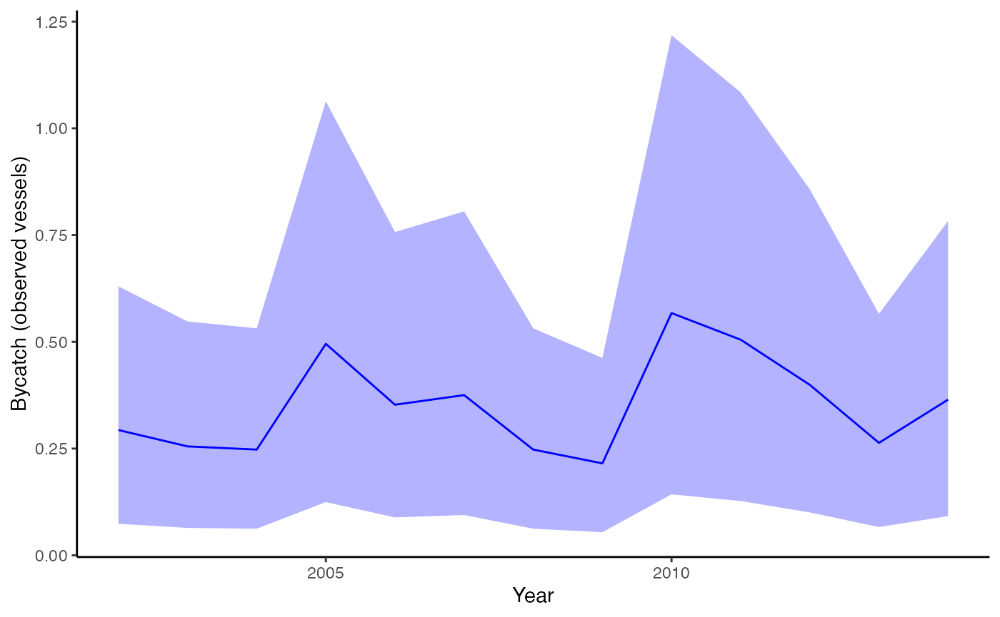
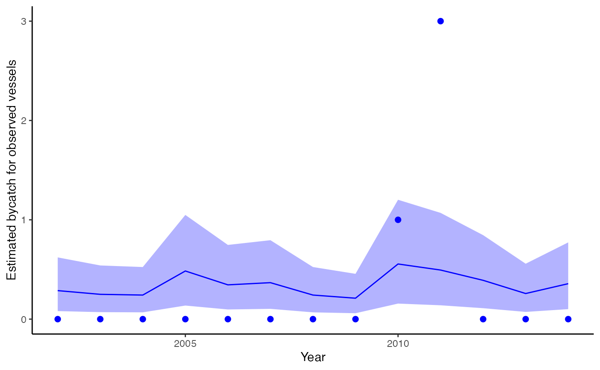
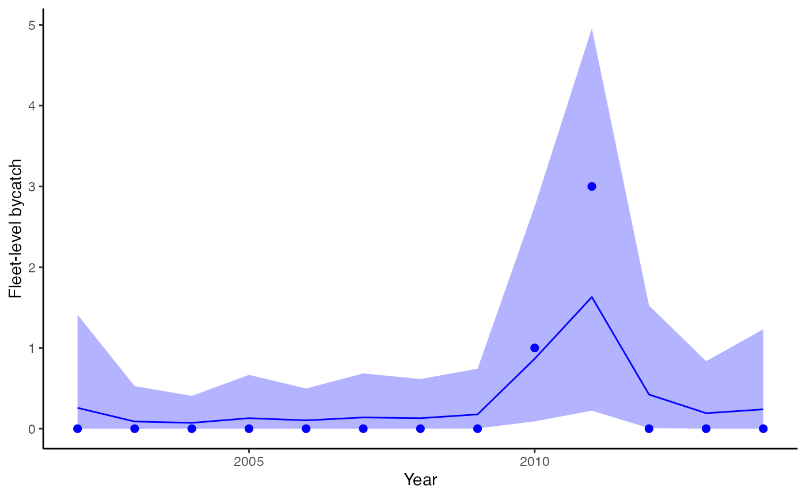
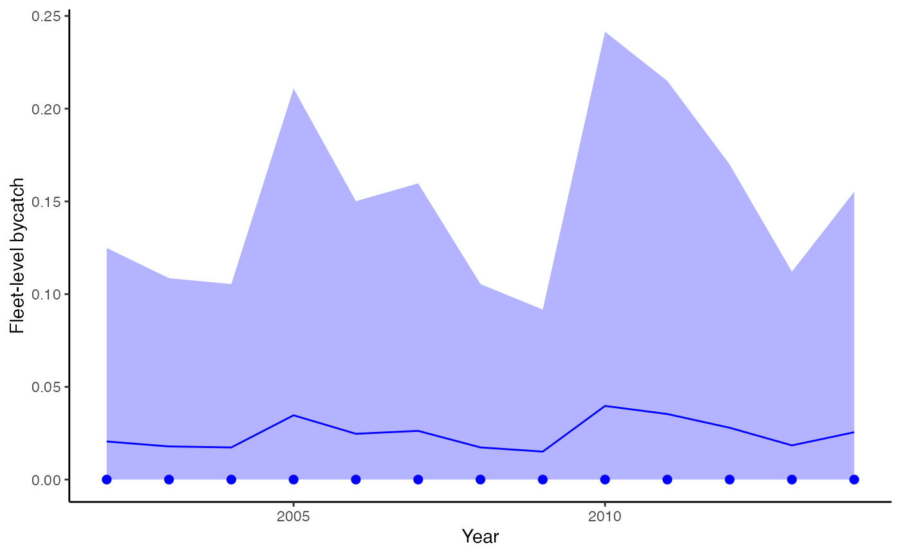

Fitting models with the bycatch package
2026-03-12
Source:vignettes/a02_fitting_models.Rmd
a02_fitting_models.RmdLoad data
# replace this with your own data frame
d = data.frame("Year"= 2002:2014,
"Takes" = c(0, 0, 0, 0, 0, 0, 0, 0, 1, 3, 0, 0, 0),
"CovRate" = c(24, 22, 14, 32, 28, 25, 30, 7, 26, 21, 22, 23, 27),
"Sets" = c(391, 340, 330, 660, 470, 500, 330, 287, 756, 673, 532, 351, 486))Simple model with constant bycatch, no covariates
We’ll start by fitting a model with constant bycatch rate,
fit = fit_bycatch(Takes ~ 1, data=d, time="Year", effort="Sets", family="poisson",
time_varying = FALSE)If divergent transition warnings or other issues indicating lack of convergence are a problem, we can try changing some of the control arguments, e.g.
fit = fit_bycatch(Takes ~ 1, data=d, time="Year", effort="Sets", family="poisson",
time_varying = FALSE, control=list(adapt_delta=0.99,max_treedepth=20))We can also increase the iterations and number of chains from the defaults (1000 and 3),
fit = fit_bycatch(Takes ~ 1, data=d, time="Year", effort="Sets", family="poisson",
time_varying = FALSE, iter=3000, chains=4)Make plots
plot_fitted(fit, xlab="Year", ylab = "Bycatch (observed vessels)")
Estimated bycatch for observed vessels (not expanded by observer coverage), but including observed takes and effort.
We can include points also,
plot_fitted(fit, xlab="Year", ylab = "Estimated bycatch for observed vessels", include_points = TRUE)
Observed bycatch (not expanded by observer coverage), incorporating data on observed takes and effort. Dots represent observed bycatch events.
Extracting model selection information (LOOIC)
The loo package in R provides a nice interface for
extracting leave one out information criterion (LOOIC) from
stanfit objects. Like AIC, lower is better. Values of LOOIC
can be used to compare models with the same response but different
structure (covariates or not, time-varying bycatch or not, etc).
Additional information on LOOIC can be found at mc-stan.org,
Vehtari
et al. 2017, or the vignette for the loo
package.
loo::loo(fit$fitted_model)$estimates## Warning: Some Pareto k diagnostic values are too high. See help('pareto-k-diagnostic') for details.## Estimate SE
## elpd_loo -11.184011 5.946065
## p_loo 2.557443 2.144096
## looic 22.368022 11.892131Negative binomial example
Using our example dataset above, we can also switch from the Poisson model to Negative Binomial.
fit = fit_bycatch(Takes ~ 1, data=d, time="Year", effort="Sets", family="nbinom2",
time_varying = FALSE)The degree of overdispersion here is stored in the variable
nb2_phi, which we can get with
phi = rstan::extract(fit$fitted_model)$nb2_phiZero - inflated example
To accomodate excess zeros, we’ve included hurdle models that separately model the probability of zeros, and use a zero-truncated model for the positive component. We currently have 2 versions of the zero-inflated model included – a Poisson, and Negative Binomial. These can be fit using
fit = fit_bycatch(Takes ~ 1, data=d, time="Year", effort="Sets", family="poisson-hurdle",
time_varying = FALSE)and
fit = fit_bycatch(Takes ~ 1, data=d, time="Year", effort="Sets", family="nbinom2-hurdle",time_varying = FALSE)Continuous models
As above, we can construct the models to be zero-inflated or not. Three different families are currently included (“normal”, “gamma”, “lognormal”). These can be fit as follows,
fit_normal = fit_bycatch(Takes ~ 1,
data=d,
time="Year",
effort="Sets",
family="normal",
time_varying = FALSE)
fit_lognormal = fit_bycatch(Takes ~ 1,
data=d,
time="Year",
effort="Sets",
family="lognormal",
time_varying = FALSE)
fit_gamma = fit_bycatch(Takes ~ 1,
data=d,
time="Year",
effort="Sets",
family="gamma",
time_varying = FALSE)And similarly to the discrete models, we can fit zero-inflated models by changing the models to the hurdle equivalents
fit_normal = fit_bycatch(Takes ~ 1,
data=d,
time="Year",
effort="Sets",
family="normal-hurdle",
time_varying = FALSE)
fit_lognormal = fit_bycatch(Takes ~ 1,
data=d,
time="Year",
effort="Sets",
family="lognormal-hurdle",
time_varying = FALSE)
fit_gamma = fit_bycatch(Takes ~ 1,
data=d,
time="Year",
effort="Sets",
family="gamma-hurdle",
time_varying = FALSE)Example with covariates
Following Martin et al. 2015 we can include fixed or continuous covariates.
For example, we could include a julian day, and a break point (representing a regulatory change for example) in the data. We could model the first variable as a continuous predictor and the second as a factor.
Using the formula interface makes it easy to include covariates (in general it’s a good idea to standardize these)
d$Day = (d$Day - mean(d$Day)) / sd(d$Day)
fit = fit_bycatch(Takes ~ Day + Reg, data=d, time="Year", effort="Sets", family="poisson",
time_varying = FALSE)We can get the 3 covariate effects out with the following call:
betas = rstan::extract(fit$fitted_model)$betaNote that ‘betas’ has 3 columns. These correspond to (1) the intercept, (2) continuous predictor, and (3) factor variable above. If we didn’t include the covariates, we’d still estimate beta[1] as the intercept.
Fit model with time-varying effects
To incorporate potential autocorrelation, we can fit a model with time-varying random effects. This is equivalent to a dynamic linear model with time varying intercept in a Poisson GLM.
fit = fit_bycatch(Takes ~ 1, data=d, time="Year",
effort="Sets", family="poisson",
time_varying = TRUE)
plot_fitted(fitted_model=fit, xlab="Year",
ylab = "Fleet-level bycatch", include_points = TRUE)
Estimated bycatch from the model with time-varying effects, incorporating data on takes, effort, and observer coverage. Dots represent observed bycatch events.
Fit model with no bycatch events
# replace this with your own data frame
d = data.frame("Year"= 2002:2014,
"Takes" = c(0, 0, 0, 0, 0, 0, 0, 0, 0, 0, 0, 0, 0),
"CovRate" = c(24, 22, 14, 32, 28, 25, 30, 7, 26, 21, 22, 23, 27),
"Sets" = c(391, 340, 330, 660, 470, 500, 330, 287, 756, 673, 532, 351, 486))
fit = fit_bycatch(Takes ~ 1, data=d, time="Year",
effort="Sets", family="poisson",
time_varying = FALSE)
plot_fitted(fitted_model=fit, xlab="Year",
ylab = "Fleet-level bycatch",
include_points = TRUE)
Estimated bycatch from the dataset with no events, incorporating effort, and observer coverage. Dots represent observed bycatch events.